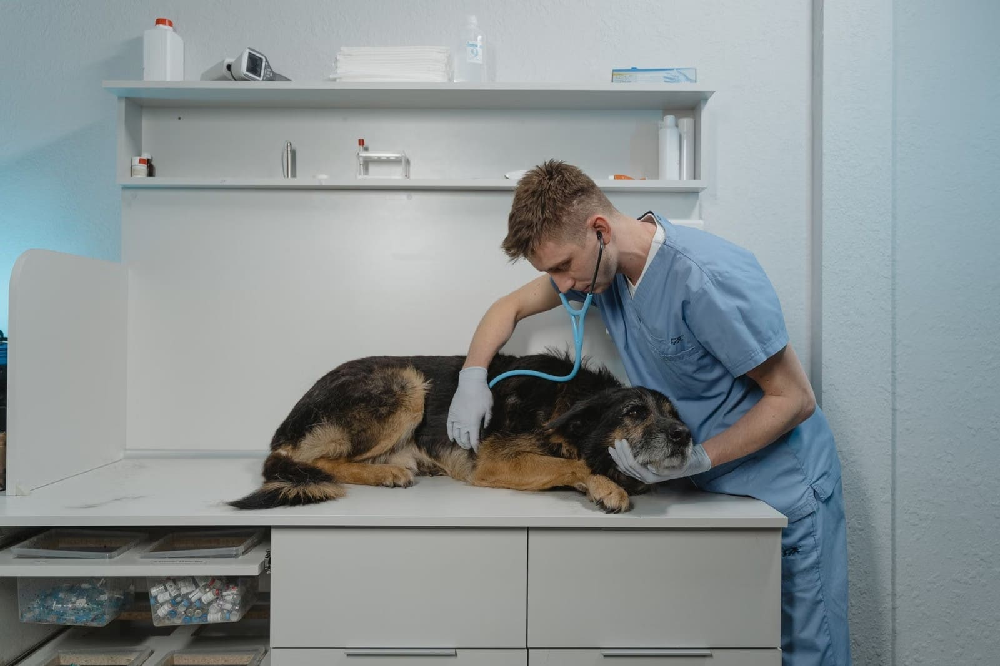
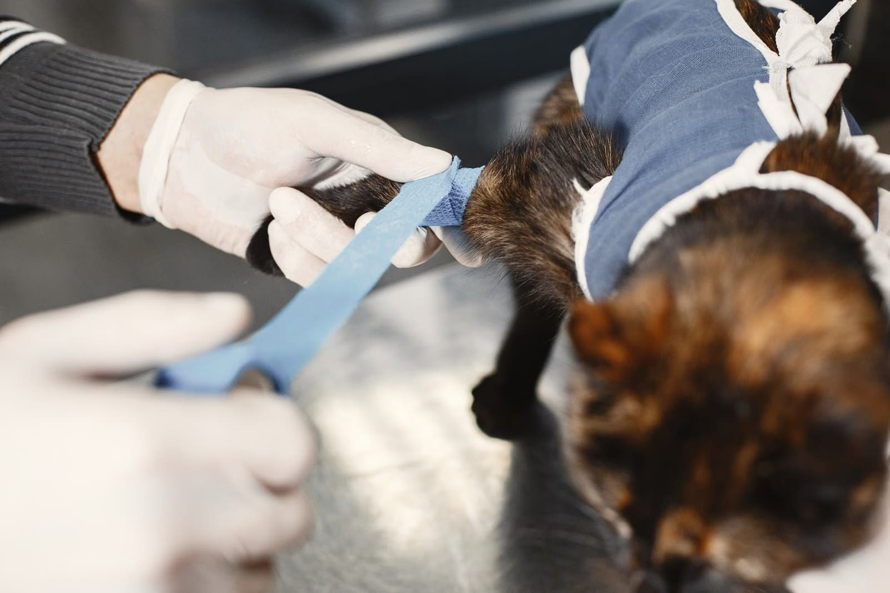

Muayeneden ameliyata, kısa kontrollerden aylar süren tedavilere kadar dostunuzun her aşamasında, Kartaltepe'deki kliniğimizdeyiz.

"Beş ay süren bir kâbusu sabır, emek ve sevgiyle bir rüyaya dönüştürüp oğlumu bana kavuşturdular."
Kesin hizmet listesi ve fiyatlar için kliniği arayabilirsiniz.
Kedi ve köpekleriniz için genel muayene, aşı takibi ve tanı.
Kaza sonrası müdahaleler ve cerrahi operasyonlar; ameliyat sonrası bakım ve takip.
Haftalar ya da aylar süren tedavilerde düzenli takip ve sabırlı iletişim.
